[next] [prev] [prev-tail] [tail] [up]
From PRAM's to Uniform Families of Circuits
The Structure of cn
The Complexity of cn
From Uniform Families of Circuits to PRAM's
The Simulation of Gate gi by Processor Mi
The Identification of Gate gi by processor Mi
This section shows that uniform families of circuits and PRAM's are polynomially
related in the resources they require. As a corollary, U_FNC is exactly the class of
problems that can be solved by the PRAM's that have polynomial space complexity and
polylog time complexity.
Notation
In what follows, PROCESSORS_TIME _F (Z(n), T(n)) denotes the set of functions that
can be computed by the PRAM's having both O(Z(n)) size complexity and O(T(n)) time
complexity (under the logarithmic cost criterion).
From PRAM's to Uniform Families of Circuits
The proof of the following theorem consists of showing how the hardware of any given
PRAM can be unrolled to obtain a corresponding uniform family of circuits. The
degenerated case in which PRAM's are restricted to being RAM's has been considered in
Lemma 7.5.1.
Theorem 7.6.1
If log T(n) and log Z(n) are fully space-constructible, log Z(n) £ T(n), and
n £ O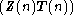, then
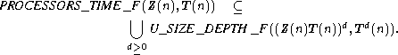
Proof
Consider any PRAM  = <M, X, Y, A> of size complexity Z(n) and time complexity
T(n). By Theorem 7.2.1 it can be assumed that
= <M, X, Y, A> of size complexity Z(n) and time complexity
T(n). By Theorem 7.2.1 it can be assumed that  is a CREW PRAM. Consider any n and
let m = Z(n) and t = T(n). The computations of
is a CREW PRAM. Consider any n and
let m = Z(n) and t = T(n). The computations of  on inputs of length n can be
simulated by the circuit cn of Figure 7.6.1.
on inputs of length n can be
simulated by the circuit cn of Figure 7.6.1.
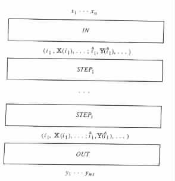
| Figure 7.6.1 | A circuit for simulating a computation of a PRAM. |
|
The Structure of cn
The circuit cn has an underlying structure similar to the circuit cn in the proof of
Lemma 7.5.1 (see Figure 7.5.1). It consists of t + 2 subcircuits, namely, IN, STEP1, ¼ , STEPt,
and OUT. IN considers a given input of length n as an encoding of some input (v1, ¼, vN ) of
 , and determines the initial configuration of
, and determines the initial configuration of  . STEPi determines the configuration
that
. STEPi determines the configuration
that  reaches after its ith step. OUT extracts the output of
reaches after its ith step. OUT extracts the output of  from the output of
STEP
t.
from the output of
STEP
t.
Each configuration of  is assumed to have the form (i1, X(i1), i2, X(i2), ¼ ;
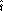
1, Y(
is assumed to have the form (i1, X(i1), i2, X(i2), ¼ ;
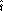
1, Y( 1),
1),  2, Y(2), ¼ ;
2, Y(2), ¼ ;  1, A(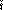1), 2, A(
1, A(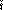1), 2, A( 2), ¼ ;
2), ¼ ;  1, V1(
1, V1( 1), 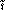2, V1(2), ¼ ; ¼ ;
1), 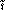2, V1(2), ¼ ; ¼ ;  1,
V
m(
1,
V
m( 1), 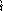2, Vm(2), ¼ ), where Vi(j) is assumed to be the value of the jth local variable of
processor Mi.
1), 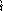2, Vm(2), ¼ ), where Vi(j) is assumed to be the value of the jth local variable of
processor Mi.
STEPi consists of three layers, namely, READ, SIMULATE, and WRITE. The READ
layer simulates the reading, from the input cells and shared memory cells, that
takes place during the ith step of the simulated computation. The SIMULATE layer
simulates the internal computation that takes place during the ith step by the
processors M1, ¼ , Mm. The WRITE layer simulates the writing, to the output cells
and shared memory cells, that takes place during the ith step of the simulated
computation.
With no loss of generality, it is assumed that in each step processor Mi reads from the
input cell X(Vi(1)) into Vi(1), and from the shared memory cell A(Vi(2)) into Vi(2).
Similarly, it is assumed that in each step Mi writes the value of Vi(3) into the output cell
Y(Vi(4)), and the value of Vi(5) into A(Vi(6)).
SIMULATE contains a subcircuit SIM _RAM for each of the processors M1, ¼ , Mm. The
internal computation of processor Mj is simulated by a SIM _RAM whose input is
(i1, Vj(i1), i2, Vj(i2), ¼). With no loss of generality it is assumed that the index j of Mj is
stored in Vj(7).
The Complexity of cn
The circuits IN, READ, WRITE, and OUT can each simulate an O(log (nZ(n)T(n)))
space-bounded, deterministic Turing transducer that carries out the desired task. The
simulations can be as in the proof of Lemma 7.5.3. Hence, each of these circuits has
size no greater than (nZ(n)T(n))O(1) £ (Z(n)T(n))O(1) and depth no greater
than (log (nZ(n)T(n)))O(1) £ TO(1)(n). SIM _RAM can simulate a processor Mi
indirectly as in the proof of Lemma 7.5.1, through a deterministic Turing transducer
equivalent to Mi. Hence, each SIM _RAM has size no greater than TO(1)(n). 
From Uniform Families of Circuits to PRAM's
The previous theorem considered the simulation of PRAM's by uniform families of
circuits. The next theorem considers simulations in the other direction.
Theorem 7.6.2
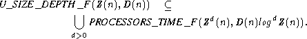
Proof
Consider any uniform family C = (c0, c1, c2, ¼ ) of circuits with size complexity Z(N) and
depth complexity D(n). Let T = <Q, S, G, d, q0, B, F> be an S(n) = O(log Z(n))
space-bounded, deterministic Turing transducer that computes { (1n, cn) | n ³ 0 }. From
T a CREW PRAM  = <M, X, Y, A> of size complexity ZO(1)(n) and time complexity
D(n)log O(1)Z(n) can be constructed to simulate the computations of C in a
straightforward manner.
= <M, X, Y, A> of size complexity ZO(1)(n) and time complexity
D(n)log O(1)Z(n) can be constructed to simulate the computations of C in a
straightforward manner.
The Simulation of Gate gi by Processor Mi
Specifically, for each gate gi in cn, the PRAM  employs a corresponding processor
M
i and a corresponding shared memory cell A(i). The processor Mi is used for simulating
the operation of gi, and the cell A(i) is used for recording the outcome of the
simulation.
employs a corresponding processor
M
i and a corresponding shared memory cell A(i). The processor Mi is used for simulating
the operation of gi, and the cell A(i) is used for recording the outcome of the
simulation.
At the start of each simulation, Mi initializes the value of A(i) to 2, as an indication
that the output of gi is not available yet. Then Mi waits until its operands become available,
that is, until its operands reach values that differ from 2. Mi has the input cell X(j) as an
operand if gi gets an input from the jth input node xj. Mi has the shared memory cell
A(j) as an operand if gi gets an input from the jth gate gj. When its operands
become available, Mi performs on them the same operation as does gi. Mi stores the
result in Y(j), if gi is the jth output node of cn. Otherwise, Mi stores the result in
A(i).
The Identification of Gate gi by processor Mi
Before the start of a simulation of cn the PRAM  determines for each gate gi in ci,
what the type t is in {¬, Ú, Ù} of gi, and which are the predecessors gL and gR of gi.
determines for each gate gi in ci,
what the type t is in {¬, Ú, Ù} of gi, and which are the predecessors gL and gR of gi.  does so by determining in parallel the output of T on input 1n, and communicating each
substring of the form (gi) and each substring of the form (gi, t, gL, gR) in the output to the
corresponding processor Mi.
does so by determining in parallel the output of T on input 1n, and communicating each
substring of the form (gi) and each substring of the form (gi, t, gL, gR) in the output to the
corresponding processor Mi.
 determines the output of T by employing a group B1, ¼ , BO(Z(n)log Z(n)) of
processors. The task of processor Bj is to determine the jth symbol in the output of
T.
determines the output of T by employing a group B1, ¼ , BO(Z(n)log Z(n)) of
processors. The task of processor Bj is to determine the jth symbol in the output of
T.
Bj, in turn, employs a processor Bja for each symbol a in the output alphabet D of T.
The task of Bja is to notify Bj whether the jth symbol in the output of T is the symbol a.
B
ja does so by simulating a log Z(n) space-bounded Turing machine MT that accepts the
language { 1n | a is the jth symbol in the output of T }. The simulation is performed in
parallel by a group of processors that uses an approach similar to that described in the
proof of Lemma 7.5.3.
Once the output of T is determined, each processor Bj that holds the symbol "("
communicates the string "(gi · · · )" that is held by Bj, ¼ , Bj+|(gi··· )|-1 to the corresponding
processor Mi of  .
.
Finally, each processor Mi that has been communicated to with a string of the form
(gi, t, gL, gR) communicates with its predecessors to determine the input nodes of cn.
[next] [prev] [prev-tail] [front] [up]